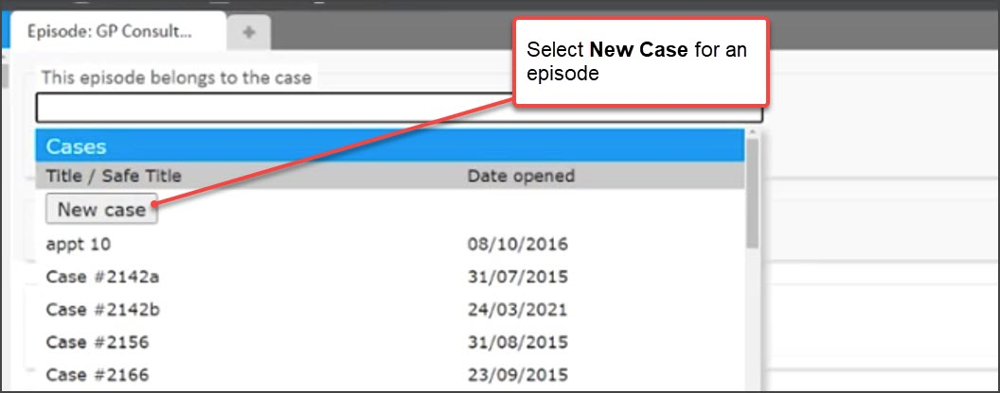
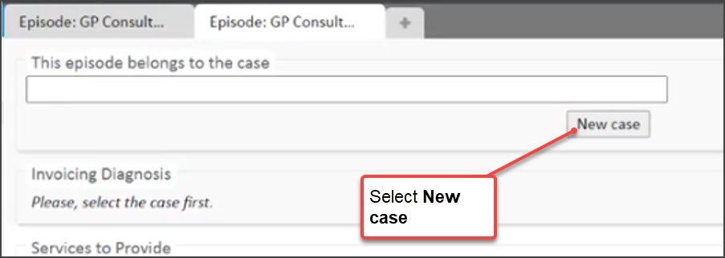
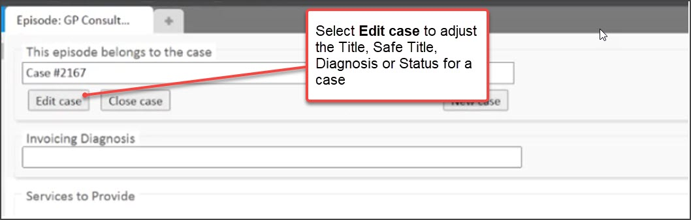
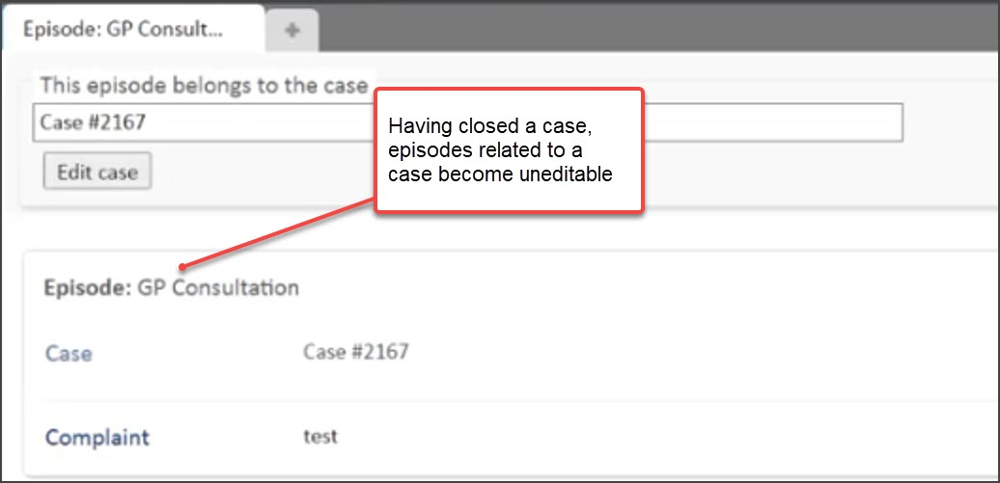
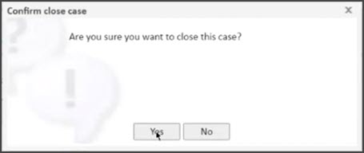

Clinical forms (episodes) allow you to record and manage clinical information for an appointment. Appointments are managed by using episodes and Cases. Each case can handle multiple episodes and you can use this functionality in such a way that best fits your work, however, most commonly a case can be used to monitor an ongoing issue.
When the pre-arrival case feature is enabled and a case is chosen during the booking process, the first episode in that appointment is assigned to the case selected during booking.
There is a range of things users can do to manage cases. Some of these tasks can be done from Eligibility and Cases within a patient record. Other tasks can be done from within a Clinical form itself.
This article provides a walk-through of how to carry out key case management activities from within a Clinical form for an appointment. Specifically:-
When you are in a Clinical Form for an Appointment, and where there is no case for the episode, you are able to create a New Case. This enables you to create a relationship between the episode and a new case.
1. From the Clinical form for an appointment, select the case field at the top of the screen
2. In the drop-down, select New case 
3. Provide the Title for the case
4. Provide the Safe title for the case
5. If appropriate, select a diagnosis
6. Leave the status to ‘Open’
7. Select Create via the menu
The case is created and assigned to the Clinical form (episode).
Alternatively, it can be done via New case under the field This episode belongs to the case.

Where an episode does have a related case that needs to be edited, from a Clinical form for the appointment, you can: -
1. Select the case field at the top of the screen
2. In the drop-down, select Edit case 
3. Make adjustments as required to the :
By changing the status to closed, the case will be closed and the Clinical form will no longer be editable.
The amendments for the case are made.
A case can be related to multiple episodes and multiple appointments. Therefore changes to a case will flow through to all episodes and appointments to which it is related.
Where a case needs to be closed, from the Clinical form you can:-
1. Select Close case
2. In the Confirm close case dialogue that appears, select Yes.
The case is closed. The episode is now no longer editable.

A case can be related to multiple episodes and multiple appointments. If a case is closed from one clinical form, this closure is applied to all episodes and appointments to which the case is related.

Where a case has been closed, from the Clinical form you can:-
1. Select Edit case
2. In the Edit case dialogue that appears, select the Status field and change to Open
3. Select Save
The case is re-opened. The Clinical form to which the case is related becomes editable again.
Below are some further useful hints and tips about managing cases in Clinical forms.